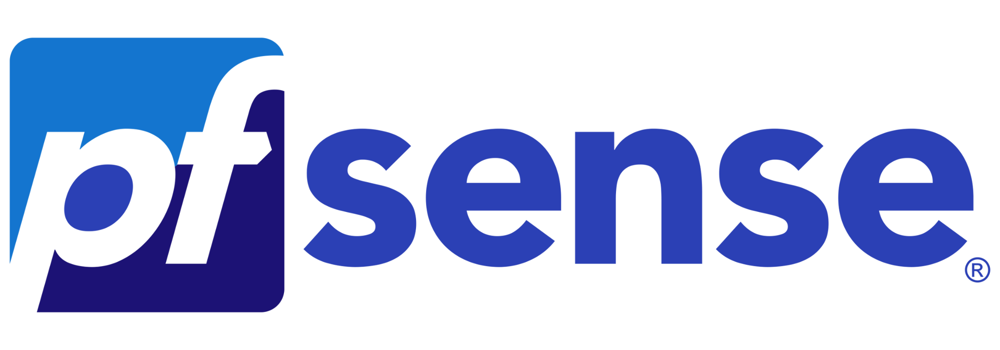
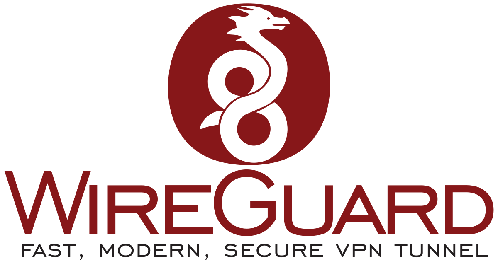
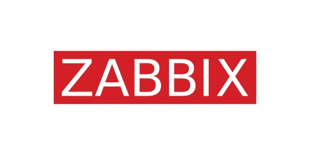

Mon Parcours
Baccalauréat STI2D - Option SIN (Systèmes d'Information et Numérique)
Lycée Camille Claudel - Fourmies
BTS SIO option SISR
Lycée Gaspard Monge - Charleville-Mézières.
Bachelor Administrateur Systèmes et Réseaux
CESI Reims - Formation en alternance.
Projet futur
CESI de REIMS Bachelor Administrateur Systèmes et réseaux
Passionné par l'informatique et plus particulièrement par la gestion de parc et les réseaux, mon ambition est d'intégrer ce Bachelor en alternance. Ce cursus représente pour moi l'opportunité idéale de transformer mes acquis théoriques et techniques obtenus en BTS SIO SISR en une expertise professionnelle concrète. Très investi lors de mes expériences chez SI Avesnois Lab, j'ai pu appréhender les enjeux de la maintenance de proximité et du déploiement automatisé (via des solutions comme OPSI). Aujourd'hui, je souhaite approfondir ces compétences au sein d'une structure dynamique, afin d'apporter des solutions d'infrastructure fiables et sécurisées tout en poursuivant ma montée en compétences.
Mes Certifications
Cisco Certified Support Technician (CCST) Cybersecurity
Validation des compétences en sécurité réseau, surveillance des menaces et principes de cyberdéfense.
SecNumacadémie (ANSSI)
MOOC complet sur la cybersécurité : sécurité du poste de travail, authentification, et sécurité sur Internet.
Réalisations Techniques

pfSense & Segmentation
Installation sur Hyper-V et configuration réseau sécurisée.
Voir le dossier →
Tunneling VPN
Mise en place de solutions d'accès distants sécurisés via WireGuard.
Voir le dossier →
Supervision Zabbix
Monitoring en temps réel des serveurs et équipements réseau.
Voir le dossier →